STAM101 :: Lecture 09 :: Test of significance

Basic concepts – null hypothesis – alternative hypothesis – level of significance – Standard error and its importance – steps in testing
Test of Significance
Objective
To familiarize the students about the concept of testing of any hypothesis, the different terminologies used in testing and application of different types of tests.
Sampling Distribution
By drawing all possible samples of same size from a population we can calculate the statistic, for example, for all samples. Based on this we can construct a frequency distribution and the probability distribution of  . Such probability distribution of a statistic is known a sampling distribution of that statistic. In practice, the sampling distributions can be obtained theoretically from the properties of random samples.
. Such probability distribution of a statistic is known a sampling distribution of that statistic. In practice, the sampling distributions can be obtained theoretically from the properties of random samples.
| Sampling Distribution of the Sample Mean |
Sampling Distribution of the Sample Mean 2 |
Standard Error
As in the case of population distribution the characteristic of the sampling distributions are also described by some measurements like mean & standard deviation. Since a statistic is a random variable, the mean of the sampling distribution of a statistic is called the expected valued of the statistic. The SD of the sampling distributions of the statistic is called standard error of the Statistic. The square of the standard error is known as the variance of the statistic. It may be noted that the standard deviation is for units whereas the standard error is for the statistic.
Standard Error of the Mean
Theory of Testing Hypothesis
Hypothesis
Hypothesis is a statement or assumption that is yet to be proved.
Statistical Hypothesis
When the assumption or statement that occurs under certain conditions is formulated as scientific hypothesis, we can construct criteria by which a scientific hypothesis is either rejected or provisionally accepted. For this purpose, the scientific hypothesis is translated into statistical language. If the hypothesis in given in a statistical language it is called a statistical hypothesis.
For eg:-
The yield of a new paddy variety will be 3500 kg per hectare – scientific hypothesis.
In Statistical language if may be stated as the random variable (yield of paddy) is distributed normally with mean 3500 kg/ha.
Simple Hypothesis
When a hypothesis specifies all the parameters of a probability distribution, it is known as simple hypothesis. The hypothesis specifies all the parameters, i.e µ and σ of a normal distribution.
Eg:-
The random variable x is distributed normally with mean µ=0 & SD=1 is a simple hypothesis. The hypothesis specifies all the parameters (µ & σ) of a normal distributions.
Composite Hypothesis
If the hypothesis specific only some of the parameters of the probability distribution, it is known as composite hypothesis. In the above example if only the µ is specified or only the σ is specified it is a composite hypothesis.
Null Hypothesis - Ho
Consider for example, the hypothesis may be put in a form ‘paddy variety A will give the same yield per hectare as that of variety B’ or there is no difference between the average yields of paddy varieties A and B. These hypotheses are in definite terms. Thus these hypothesis form a basis to work with. Such a working hypothesis in known as null hypothesis. It is called null hypothesis because if nullities the original hypothesis, that variety A will give more yield than variety B.
The null hypothesis is stated as ‘there is no difference between the effect of two treatments or there is no association between two attributes (ie) the two attributes are independent. Null hypothesis is denoted by Ho.
Eg:-
There is no significant difference between the yields of two paddy varieties (or) they give same yield per unit area. Symbolically, Ho: µ1=µ2.
Alternative Hypothesis
When the original hypothesis is µ1>µ2 stated as an alternative to the null hypothesis is known as alternative hypothesis. Any hypothesis which is complementary to null hypothesis is called alternative hypothesis, usually denoted by H1.
Eg:-
There is a significance difference between the yields of two paddy varieties. Symbolically,
H1: µ1≠µ2 (two sided or directionless alternative)
If the statement is that A gives significantly less yield than B (or) A gives significantly more yield than B. Symbolically,
H1: µ1 < µ2 (one sided alternative-left tailed)
H1: µ1 > µ2 (one sided alternative-right tailed)
Testing of Hypothesis
Once the hypothesis is formulated we have to make a decision on it. A statistical procedure by which we decide to accept or reject a statistical hypothesis is called testing of hypothesis.
Sampling Error
From sample data, the statistic is computed and the parameter is estimated through the statistic. The difference between the parameter and the statistic is known as the sampling error.
Test of Significance
Based on the sampling error the sampling distributions are derived. The observed results are then compared with the expected results on the basis of sampling distribution. If the difference between the observed and expected results is more than specified quantity of the standard error of the statistic, it is said to be significant at a specified probability level. The process up to this stage is known as test of significance.
STATISTICS - INTRODUCTION
Decision Errors
By performing a test we make a decision on the hypothesis by accepting or rejecting the null hypothesis Ho. In the process we may make a correct decision on Ho or commit one of two kinds of error.
- We may reject Ho based on sample data when in fact it is true. This error in decisions is known as Type I error.
- We may accept Ho based on sample data when in fact it is not true. It is known as Type II error.
|
Accept Ho |
Reject Ho |
Ho is true |
Correct Decision |
Type I error |
Ho is false |
Type II error |
Correct Decision |
The relationship between type I & type II errors is that if one increases the other will decrease.
The probability of type I error is denoted by α. The probability of type II error is denoted by β. The correct decision of rejecting the null hypothesis when it is false is known as the power of the test. The probability of the power is given by 1-β.
Critical Region
The testing of statistical hypothesis involves the choice of a region on the sampling distribution of statistic. If the statistic falls within this region, the null hypothesis is rejected: otherwise it is accepted. This region is called critical region.
Let the null hypothesis be Ho: µ1 = µ2 and its alternative be H1: µ1 ≠ µ2. Suppose Ho is true. Based on sample data it may be observed that statistic follows a normal distribution given by
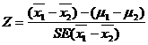
We know that 95% values of the statistic from repeated samples will fall in the range ±1.96 times SE . This is represented by a diagram.
. This is represented by a diagram.
Region of Region of
rejection rejection
Region of acceptance
The border line value ±1.96 is the critical value or tabular value of Z. The area beyond the critical values (shaded area) is known as critical region or region of rejection. The remaining area is known as region of acceptance.
If the statistic falls in the critical region we reject the null hypothesis and, if it falls in the region of acceptance we accept the null hypothesis.
In other words if the calculated value of a test statistic (Z, t, χ2 etc) is more than the critical value in magnitude it is said to be significant and we reject Ho and otherwise we accept Ho. The critical values for the t and  are given in the form of readymade tables. Since the criticval values are given in the form of table it is commonly referred as table value. The table value depends on the level of significance and degrees of freedom.
are given in the form of readymade tables. Since the criticval values are given in the form of table it is commonly referred as table value. The table value depends on the level of significance and degrees of freedom.
Example: Z cal < Z tab -We accept the Ho and conclude that there is no significant difference between the means
Test Statistic
The sampling distribution of a statistic like Z, t, & χ2 are known as test statistic.
Generally, in case of quantitative data
Note
The choice of the test statistic depends on the nature of the variable (ie) qualitative or quantitative, the statistic involved (i.e) mean or variance and the sample size, (i.e) large or small.
Level of Significance
The probability that the statistic will fall in the critical region is 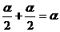. This α is nothing but the probability of committing type I error. Technically the probability of committing type I error is known as level of Significance.
One and two tailed test
The nature of the alternative hypothesis determines the position of the critical region. For example, if H1 is µ1≠µ2 it does not show the direction and hence the critical region falls on either end of the sampling distribution. If H1 is µ1 < µ2 or µ1 > µ2 the direction is known. In the first case the critical region falls on the left of the distribution whereas in the second case it falls on the right side.
One tailed test – When the critical region falls on one end of the sampling distribution, it is called one tailed test.
Two tailed test – When the critical region falls on either end of the sampling distribution, it is called two tailed test.
For example, consider the mean yield of new paddy variety (µ1) is compared with that of a ruling variety (µ2). Unless the new variety is more promising that the ruling variety in terms of yield we are not going to accept the new variety. In this case H1 : µ1 > µ2 for which one tailed test is used. If both the varieties are new our interest will be to choose the best of the two. In this case H1: µ1 ≠ µ2 for which we use two tailed test.
Degrees of freedom
The number of degrees of freedom is the number of observations that are free to vary after certain restriction have been placed on the data. If there are n observations in the sample, for each restriction imposed upon the original observation the number of degrees of freedom is reduced by one.
The number of independent variables which make up the statistic is known as the degrees of freedom and is denoted by (Nu)
Degrees of Freedom in Statistics
Steps in testing of hypothesis
The process of testing a hypothesis involves following steps.
- Formulation of null & alternative hypothesis.
- Specification of level of significance.
- Selection of test statistic and its computation.
- Finding out the critical value from tables using the level of significance, sampling distribution and its degrees of freedom.
- Determination of the significance of the test statistic.
- Decision about the null hypothesis based on the significance of the test statistic.
- Writing the conclusion in such a way that it answers the question on hand.
Large sample theory
The sample size n is greater than 30 (n≥30) it is known as large sample. For large samples the sampling distributions of statistic are normal(Z test). A study of sampling distribution of statistic for large sample is known as large sample theory.
Small sample theory
If the sample size n ils less than 30 (n<30), it is known as small sample. For small samples the sampling distributions are t, F and χ2 distribution. A study of sampling distributions for small samples is known as small sample theory.
Test of Significance
The theory of test of significance consists of various test statistic. The theory had been developed under two broad heading
- Test of significance for large sample
Large sample test or Asymptotic test or Z test (n≥30)
- Test of significance for small samples(n<30)
Small sample test or Exact test-t, F and χ2.
It may be noted that small sample tests can be used in case of large samples also.
Large sample test
Large sample test are
- Sampling from attributes
- Sampling from variables
Sampling from attributes
There are two types of test for attributes
- Test for single proportion
- Test for equality of two proportions
Test for single proportion
In a sample of large size n, we may examine whether the sample would have come from a population having a specified proportion P=Po. For testing
We may proceed as follows
- Null Hypothesis (Ho)
Ho: The given sample would have come from a population with specified proportion P=Po
- Alternative Hypothesis(H1)
H1 : The given sample may not be from a population with specified proportion
P≠Po (Two Sided)
P>Po(One sided-right sided)
P<Po(One sided-left sided)
- Test statistic
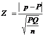
It follows a standard normal distribution with µ=0 and s2=1
- Level of Significance
The level of significance may be fixed at either 5% or 1%
- Expected vale or critical value
In case of test statistic Z, the expected value is
Ze = 1.96 at 5% level
2.58 at 1% level Two tailed test
Ze = 1.65 at 5% level
2.33 at 1% level One tailed test
- Inference
If the observed value of the test statistic Zo exceeds the table value Ze we reject the Null Hypothesis Ho otherwise accept it.
Test for equality of two proportions
Given two sets of sample data of large size n1 and n2 from attributes. We may examine whether the two samples come from the populations having the same proportion. We may proceed as follows:
1. Null Hypothesis (Ho)
Ho: The given two sample would have come from a population having the same proportion P1=P2
2. Alternative Hypothesis (H1)
H1 : The given two sample may not be from a population with specified proportion
P1≠P2 (Two Sided)
P1>P2(One sided-right sided)
P1<P2(One sided-left sided)
3. Test statistic
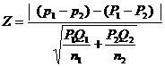
When P1and P2 are not known, then
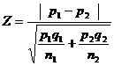 for heterogeneous population
Where q1 = 1-p1 and q2 = 1-p2
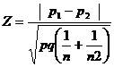 for homogeneous population
p= combined or pooled estimate.
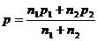
4. Level of Significance
The level may be fixed at either 5% or 1%
5. Expected vale
The expected value is given by
Ze = 1.96 at 5% level
2.58 at 1% level Two tailed test
Ze = 1.65 at 5% level
 2.33 at 1% level One tailed test
2.33 at 1% level One tailed test
6. Inference
If the observed value of the test statistic Z exceeds the table value Ze we may reject the Null Hypothesis Ho otherwise accept it.
Sampling from variable
In sampling for variables, the test are as follows
- Test for single Mean
- Test for single Standard Deviation
- Test for equality of two Means
- Test for equality of two Standard Deviation
Test for single Mean
In a sample of large size n, we examine whether the sample would have come from a population having a specified mean
1. Null Hypothesis (Ho)
Ho: There is no significance difference between the sample mean ie., µ=µo
or
The given sample would have come from a population having a specified mean
ie., µ=µo
2. Alternative Hypothesis(H1)
H1 : There is significance difference between the sample mean
ie., µ≠µo or µ>µo or µ<µo
3. Test statistic
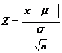
When population variance is not known, it may be replaced by its estimate
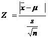
4. Level of Significance
The level may be fixed at either 5% or 1%
5.Expected value
The expected value is given by
 Ze = 1.96 at 5% level
Ze = 1.96 at 5% level
2.58 at 1% level Two tailed test
Ze = 1.65 at 5% level
 2.33 at 1% level One tailed test
2.33 at 1% level One tailed test
6. Inference
If the observed value of the test statistic Z exceeds the table value Ze we may reject the Null Hypothesis Ho otherwise accept it.
Test for equality of two Means
Given two sets of sample data of large size n1 and n2 from variables. We may examine whether the two samples come from the populations having the same mean. We may proceed as follows
1. Null Hypothesis (Ho)
Ho: There is no significance difference between the sample mean ie., µ=µo
or
The given sample would have come from a population having a specified mean
ie., µ1=µ2
2. Alternative Hypothesis (H1)
H1: There is significance difference between the sample mean ie., µ=µo
ie., µ1≠µ2 or µ1<µ2 or µ1>µ2
3. Test statistic
When the population variances are known and unequal (i.e) 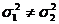
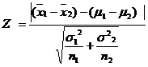
When 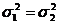,
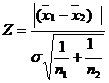
where 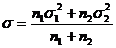
The equality of variances can be tested by using F test.
When population variance is unknown, they may be replaced by their estimates s12 and s22
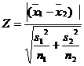 when s12≠ s22
when s12 = s22
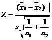
where 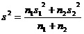
4. Level of Significance
The level may be fixed at either 5% or 1%
5. Expected vale
The expected value is given by
Ze = 1.96 at 5% level
 2.58 at 1% level Two tailed test
2.58 at 1% level Two tailed test
 Ze = 1.65 at 5% level
Ze = 1.65 at 5% level
2.33 at 1% level One tailed test
6. Inference
If the observed value of the test statistic Z exceeds the table value Ze we may reject the Null Hypothesis Ho otherwise accept it.
| Download this lecture as PDF here |